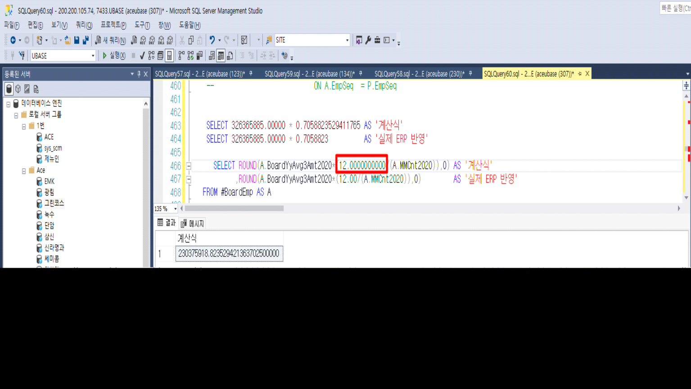

25.02.19 유베이스 퇴직금처리
퇴직금처리 화면 권상철 00000055 임원퇴직금처리 시,
\<퇴직전3년간의연평균급여(2020.01.01 이후분)> 칼럼에 금액이
307099262*(12/17) 산식으로 계산 되어 216,775,950원이 산출 되어야 하나 현재 216,775,933원이 산출 되었습니다.
계산 로직이 사이트인지 확인 부탁드리며 사이트인 경우 정상적으로 계산 될 수 있게 수정 부탁드립니다.
확인 부탁드립니다. 감사합니다.

안녕하세요. 개발팀 박성재 입니다.
[퇴직금처리] 화면 퇴직금 계산 시 표준 SP 동작하고 있습니다.
(SP :_SXPRRetWRetAmtBoardMLimitCr_2020)
퇴직전3년간의연평균급여 * (12 / 17) 계산 식에 대해
'12 / 17' 값에 대해
230375918.823529421363702500000 값이 아닌
230375901.545335500000 값이 적용되어 계산식과 다른 결과값 저장된 것으로 확인하였습니다.
12.00 에 대해 소수점 0 자리수 증가하여 계산시 정상적으로 값 조회됩니다.
퇴직금 계산 SP 흐름
_SXPRRetWRetAmtProc => _SXPRRetWRetAmtCalc => _SXPRRetWRetAmtBoardMLimitCr_2020
확인 부탁 드립니다.
감사합니다.

출처: \<https://call.sysware.co.kr/Page/Open/78544/100101/0/18820244>